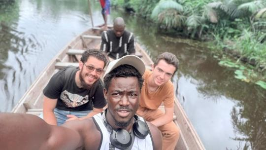
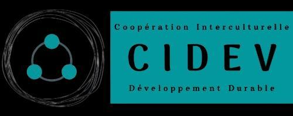
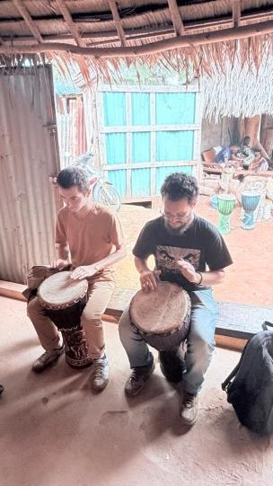
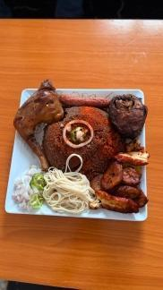
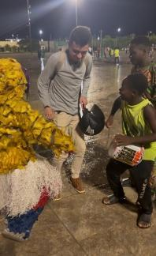

Reconstruire le site de CIDEV
Remplacer un ancien site WordPress lent et difficile à maintenir par une expérience plus claire, moderne et adaptée aux téléphones comme aux ordinateurs.
FRANCE → BÉNIN · CARNET DE VOYAGE
Deux ans en France. Trois mois au Bénin.
Une autre façon de regarder mon pays.

06° N / 02° E — AU FIL DE L’EAU, ADJARRAAngers → Paris → Cotonou → Allada → Porto-Novo → Adjarra → Ouidah
01 / REVENIR
Je m’appelle Emmanuel. J’ai quitté le Bénin pour étudier en France. Deux ans plus tard, je rentrais pour un stage de trois mois en informatique à Allada.
Un train d’Angers à Paris, puis six heures de vol. À l’arrivée, il est 23 heures. Ma famille ne sait pas encore que je suis là. Entre la joie de retrouver mon pays et une certaine nostalgie, les émotions se mélangent.
Une carte SIM locale, un contact qui vient nous chercher, une première nuit dans un appartement sans meubles. Le lendemain, direction Allada. Le retour commence aussi par ces petites épreuves, et par l’envie de trouver sa place à nouveau.
02 / TRANSMETTRE
À Allada, l’informatique prend tout son sens lorsqu’elle sert les autres.

Remplacer un ancien site WordPress lent et difficile à maintenir par une expérience plus claire, moderne et adaptée aux téléphones comme aux ordinateurs.
Participer à des ateliers informatiques pour les jeunes d’Allada. Expliquer, écouter, s’adapter : transmettre va bien au-delà de la technique.
Un système d’irrigation intelligent devait réagir à l’humidité du sol. Faute de financement, il n’a pas pu démarrer. Une déception, mais aussi une leçon de terrain.
03 / EXPLORER
De la ville à la rivière, des lieux de mémoire
aux savoir-faire transmis à la main.
ENTRE DEUX ESCALES



04 / PRENDRE DU RECUL
Le tourisme ouvre des perspectives pour les hôtels, les restaurants et les transports. Mais la hausse des prix peut aussi peser sur les familles qui vivent sur place toute l’année.
Pendant le stage, j’ai mesuré combien une connexion lente ou coûteuse peut freiner un projet. L’accès à Internet reste essentiel pour l’éducation et les initiatives des jeunes.
Un diplôme ne suffit pas toujours à trouver un emploi adapté. Rapprocher les universités, les entreprises et les jeunes entrepreneurs pourrait ouvrir de nouvelles voies.
« L’informatique n’est pas seulement une question de technologie. Elle peut aussi devenir un outil pour apprendre et trouver sa place. »EMMANUEL · AU RETOUR D’ALLADA
LA SUITE S’ÉCRIT ENSEMBLE